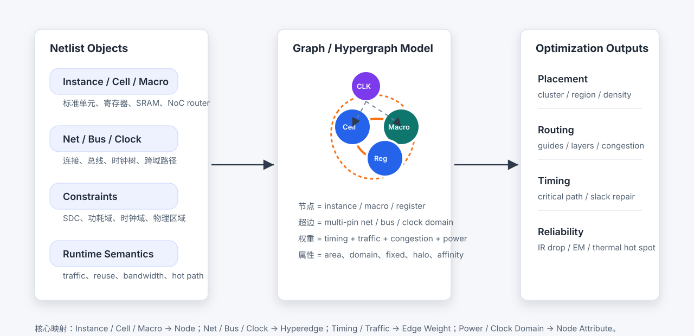
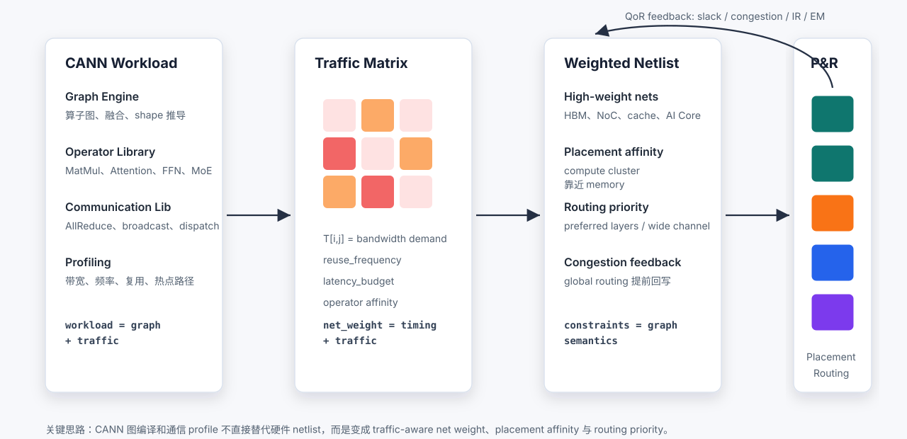
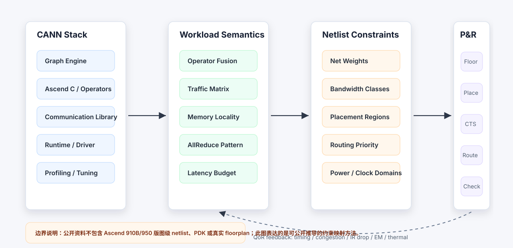
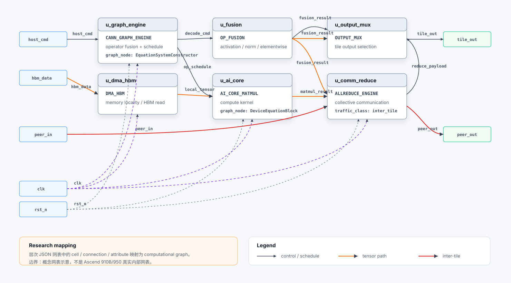

从一份连接清单，到可以驱动芯片物理布局的可计算约束图——这中间发生了什么？ 本白皮书面向没有 EDA 背景的产品经理，用可视化和类比解释 AI 芯片网表设计的核心逻辑、行业现状与产品洞察。
普通手机 SoC 的信号网络（Net）数量在百万级。AI 训练芯片仅一个计算阵列内部的连线就能达到十亿级以上。传统 EDA 工具的约束方式在这个规模下效率极低。
AI 芯片的物理布局工具在布线时，不知道某条线正在传输矩阵乘法的激活值，还是注意力机制的 Key。但这个信息决定了这条线应该有多粗、被安排在哪个区域。
网表约束如果定义不准确，往往要到静态时序分析（STA）甚至流片后才暴露。AI 芯片研发周期 2–3 年，每次重新迭代代价极高。
本白皮书基于华为 CANN/Ascend 公开文档、Yosys/netlistsvg 开源工具链和 OpenROAD 流程研究整理。不包含任何厂商内部网表或 PDK 信息。
一个 PyTorch 模型变成可以生产的芯片，要经过七个层次的转换。每一层都在丢弃上层的信息、添加物理世界的约束。理解这条链路，是理解网表设计的前提。
数据流主导：AI 芯片的计算是高度规则的矩阵运算流，数据在固定路径上反复搬运。与通用处理器的"控制流"不同，这种模式要求布线工具感知数据的流量方向和带宽量级。
计算存储协同：AI Core 内部的 Local Memory 和计算单元必须物理上靠近——否则数据搬运（DMA）的延迟会直接影响算子执行效率。这是一个布局决策，而不只是时序问题。
极端功耗密度：AI 训练芯片的计算阵列区域功耗密度是普通逻辑区域的数十倍。不合理的布局会导致局部温度过高，触发限频保护，直接降低芯片性能。
传统 P&R 工具（如 Cadence Innovus、Synopsys IC Compiler）的约束语言——SDC（时序）、DEF（物理区域）——都是在描述硬件结构，不描述软件行为。
当一条总线连接着矩阵乘法单元和激活函数单元，工具只知道"这条线有时序要求"，不知道"这条线每秒要搬运 4TB 的数据"。带宽敏感的布线决策无法自动推导。
这个"语义鸿沟"是 AI 芯片约束体系研究的核心动机：如何把软件执行语义下沉到物理设计层。
2025 年行业转折点：大模型推理调用量同比增长超 300%，AI Agent 将单用户日均请求从 10 次推高至 50+ 次。AI 芯片设计重心正从"训练吞吐量最大化"转向"推理延迟最小化 + 能效最优化"。两种目标对网表约束的侧重截然不同——训练芯片优先收紧矩阵计算的时序关键路径；推理芯片更关注 KV Cache 随机访存延迟和动态批处理下的功耗控制。
网表（Netlist）是芯片设计中的"施工图"。建筑设计图告诉你房间布局，施工图告诉你每根水管、电线、承重柱的精确位置和规格。网表告诉芯片工厂：这个设计由哪些逻辑单元组成，它们之间怎么连接。
芯片中的基本功能模块。可以是一个与门（AND gate）、一个触发器（Flip-Flop），也可以是一整个乘加运算单元（MAC）。AI 芯片中还包括 DMA 控制器、向量运算单元、本地内存接口等专用 Cell。
类比：建筑里的"房间功能模块"，厨房、卧室、配电箱。
连接 Cell 之间的物理走线。一个"Net"可以同时连接多个 Cell（多播）。AI 芯片中的 Net 有三类：时钟网络（全芯片同步）、数据总线（高带宽矩阵传输）、控制信号（低带宽但时序严格）。
类比：建筑里的"管线系统"，电路、水管、暖通各自有不同的流量和走向要求。
附加在 Cell 或 Wire 上的设计要求，告诉布线工具这个元件有什么特殊需求：时钟域、功耗域、布局区域限制、优先级别等。AI 芯片需要在此基础上新增"工作负载语义"属性，例如 traffic_class、tile_id、bandwidth_demand。
类比：施工图上的"备注"，这根梁需要用 C40 混凝土，这段管道需要保温层。
数量级差异意味着：传统工程师手工调整约束的方式不再可行，必须有系统化的自动推导机制。
网表本身是一份"清单"，但布局布线算法需要的是"图"——每个 Cell 是节点，每个 Net 是超边（Hyperedge，可连接多个节点），每条连线有权重（Weight）。
权重决定了布线优先级：权重高的线会优先获得更短的路径、更低的信号延迟。
AI 芯片约束体系的核心任务，就是给这些权重赋予合理的值——不仅考虑时序，还要考虑带宽、热点、通信模式。
关键公式：net_weight = 时序关键度 + 流量需求 + 拥塞风险 + 功耗活跃度 + 拓扑优先级
功耗基础 P = α·C·V²·f：动态功耗正比于负载电容 C——而 C 的大小直接取决于连线长度。布线优化缩短走线 = 减小 C = 降低功耗。这是网表约束要求高频算子物理靠近本地内存的根本原因。
不是因为 AI 芯片"更复杂"，而是因为 AI 工作负载有三个根本性的特征，使得传统约束体系无法表达关键的设计需求。
GPU 由大量 Streaming Multiprocessor（SM）并行组成，每个 SM 内含 CUDA Core（通用并行计算）和专门的 Tensor Core（硬件加速矩阵运算）。NVIDIA Blackwell Ultra 有 160 个 SM，每 SM 含 128 个 CUDA Core 和 4 个第五代 Tensor Core，总计算峰值达 40 PFLOPS。
GPU 约束重点：多时钟域同步（计算核心 ~2.2GHz / 内存控制器 ~1.8GHz）、HBM 接口的物理距离（决定带宽利用率上限）、计算阵列区域的局部热密度（是周边逻辑区域的数十倍）。
NPU 的核心是脉动阵列：数据在规则网格中边流动边计算，N×N 阵列仅需 2N 次内存访问即可完成 N² 次乘加——比 GPU 的访存次数少 N 倍，因此推理能效高出 5–10 倍。华为 Ascend 的"存算一体 + 数据流驱动并行"正是基于此原理。
NPU 约束重点：Tiling 切块是否与阵列尺寸对齐（错位会浪费大量空泡时间）、DMA 搬运路径与计算单元的物理亲和性（决定数据局部性）。
Transformer 的矩阵乘法（MatMul）是有规律的循环嵌套，数据在固定路径上高频流动。这与 CPU 执行的控制流程序完全不同——CPU 每条指令去哪里是不确定的，AI 芯片的数据路径是可预测的。
可预测意味着：可以在设计阶段就知道哪条线最繁忙，提前分配更宽的物理走线和更短的路径。但传统 EDA 工具不读软件代码，无法自动推导这些信息。
AI Core 内部的 Local Memory 空间有限（通常几百 KB），无法装下整个张量。算子必须把数据切成小块（Tiling），反复从片外搬入、计算、搬出。
切分策略直接影响物理布局：如果 DMA 传输路径和计算单元在版图上相距较远，每次 tiling 循环都会引入额外的信号延迟，累积成性能损耗。因此，tiling 参数是布局约束的隐性来源。
AI 训练通常需要几百到几千个芯片协同工作，通过 AllReduce、AllGather 等集合通信同步梯度。每种通信模式对芯片内部 NoC（片上网络）和芯片间互连都有不同的拓扑要求。
环形 AllReduce 需要相邻节点的双向高带宽链路；树形 AllReduce 需要集中式路由节点有足够的出口带宽。这些模式在网表层面要求不同的路由优先级配置。
| 约束维度 | 传统 SoC（EDA 标准描述） | AI 芯片（需要新增的语义） |
|---|---|---|
| 时序 | SDC 文件定义建立/保持时间 | 同上 + 带宽延迟乘积（BDP）感知 |
| 布局区域 | DEF floorplan region/group | 同上 + 按算子融合组和 tile 亲和性分区 |
| 线网权重 | 时序关键度（Timing Criticality） | 时序 + 流量需求 + 通信模式优先级 |
| 功耗 | UPF 功耗域定义 | 同上 + 热点预测（按 profiling 频率图） |
| 多芯片 | 不在单芯片设计范围内 | AllReduce 拓扑 → NoC 路由权重 |
AI 芯片网表约束体系可以组织为五个层次，从业务目标出发，逐层向下传递，最终形成可被 P&R 工具消费的物理约束，再通过实测结果反向校准。
定义所有约束的优化方向：性能（PPA）、吞吐量、端到端延迟、能效比、可制造性、可测试性。
从编译器（CANN GE / XLA / TVM）提取算子融合模式、通信库调用、profiling 热点和 tiling 策略，形成工作负载语义。
RTL / 门级 Cells、Wires、Ports、Bus、Clock 树、Reset 网络，以及注入的 traffic_class、bandwidth_demand、affinity_group 等 AI 属性。
Floorplan 区域划分、Placement Region、Halo/Channel 隔离、CTS 时钟树综合、多层路由规则、IR Drop / EM / 热约束。
STA Slack 报告、拥塞地图、功耗分析、IR Drop 热图、EM 分析结果回写为上层约束的校准输入，驱动下一轮迭代。
五层约束不是单向瀑布。物理层的真实 QoR（Quality of Results，设计质量指标）——比如某个区域的拥塞报告——必须能反向更新第二层的工作负载权重。
类比：城市路网规划时，交通部门会根据实际拥堵数据重新调整路权分配和信号灯配时。芯片设计也需要同样的反馈机制。
net_weight = α·timing + β·traffic + γ·congestion + δ·power + ε·topology
五个系数（α～ε）不是固定值，而是按设计阶段动态调整的。早期 floorplan 阶段 β（流量）权重高；后期 sign-off 阶段 α（时序）权重高。
这个公式本质上是"如何在布线资源有限的情况下分配优先级"的决策框架。
AI 芯片动态功耗由四个变量决定：α（开关活动因子，当前周期有多少晶体管在翻转）、C（负载电容，连线越长 C 越大）、V²（工作电压的平方，降压效果最显著）、f（工作频率）。
对约束体系的意义：缩短布线长度 → 降低 C → 直接降低功耗；这正是约束框架要求高频算子物理靠近本地内存的根本原因。DVFS 在推理空闲期同步降低 V 和 f，可实现二次方级别的功耗节省。时钟门控（Clock Gating）对空闲模块关断时钟，可节省 30–50% 动态功耗；多阈值电压（MVTH）在非关键路径换用高阈值器件，可节省 15–30% 静态漏电。
FinFET → GAA：7nm 以下工艺从鳍式晶体管（FinFET）演进到全环绕栅极（GAA）纳米线结构，栅极宽度控制精度要求达 0.5nm。7nm 芯片的设计规则超过 10 万条，DRC 验证一次耗时数小时；一次约束违规引发的重新迭代代价可达数周工期。这也是 AI 驱动 EDA（如 Synopsys AgentEngineer、Cadence ChipStack）成为必需品的根本原因。
Chiplet 异构集成：将计算、存储、I/O 芯粒分别制造后封装集成，各模块可选最优工艺节点（如计算用 3nm、SRAM 用 5nm、I/O 用 12nm）。Die 间的硅通孔（TSV）互连引入了跨 Die 时序约束和信号完整性（SI）验证这两个在单片设计时不存在的新维度。
Design for Testability（可测试性设计）的核心原则：在设计阶段就内置测试通路，让片外测试设备能够"看进"芯片内部的节点状态。常见手段包括：扫描链（Scan Chain，将触发器串联以便逐位读出状态）、BIST（Built-In Self-Test，内置自检电路）和 MBIST（针对 SRAM 的 March 算法测试）。
AI 芯片的 DFT 挑战：Chiplet 封装中的 TSV 测试、3D 叠层结构的覆盖率验证，以及避免 DFT 插入破坏原有的时序收敛——这些都是网表层需要提前预留空间的约束来源。
Cell 利用率（CellUrate）= 有效器件面积 / 芯片总面积，是衡量版图紧凑程度的核心指标。利用率过低浪费面积（成本上升）；过高则布线资源紧张，导致拥塞和时序违规。
AI 芯片的面积约束特殊性：计算阵列区域（Tensor Core / 脉动阵列）的 Cell 密度可高达 70–80%，而控制逻辑区域需保留 30–50% 的布线余量用于时序修复。不同功能区域需要差异化的利用率约束，而不是一个全局数字。
以下五张图由 Yosys、netlistsvg 实验和方法论推导生成，覆盖从图模型抽象到真实 RTL 网表可视化的完整链路。每张图附有面向产品经理的文字解读。

这张图展示了网表到图模型的映射关系。对布局布线算法来说，网表不是一份静态清单，而是一个可以被分区、优化、遍历的数据结构。
Node（节点）：每个逻辑单元（Cell、Macro、寄存器）变成图的一个节点，携带面积、时钟域、功耗域等属性。
Hyperedge（超边）：一个 Net 可以连接多个 Cell，因此用"超边"而不是普通的两点之间的边来表示。
Edge Weight（边权重）：综合考虑时序关键度、流量需求、拥塞风险和功耗活跃度，决定这条线的布线优先级。
这是整个约束体系的算法底座。后续所有优化都在这个图结构上进行。
这张图回答了一个核心问题：编译器（CANN / XLA）里的执行信息，怎么变成 P&R 工具能用的约束？
第一步：编译器在执行算子图时，记录每条数据路径的带宽使用量、复用频率和热点算子——这就是 Profiling 数据。
第二步：Profiling 数据汇聚成 Traffic Matrix（流量矩阵）——哪个模块和哪个模块之间流量最大。
第三步：Traffic Matrix 叠加到网表的边权重上，形成"Traffic-aware Netlist"。
第四步：P&R 工具用这个带权重的网表做布局，流量大的模块会被自动摆放得更近，减少线长和延迟。
关键认知：Profiling 数据不替代硬件网表，而是为网表增加工作负载感知的权重层。


这张图展示了昇腾软件栈（CANN）到物理设计约束的完整映射路径。注意这是方法论图——基于公开资料推导，不代表真实芯片内部实现。
Graph Engine：算子图、融合规则 → 计算簇亲和性约束（相邻算子摆放在同一区域）
算子库 / Ascend C：MatMul、向量计算、tiling 参数 → AI Core 内部数据通路的布线权重
通信库：AllReduce、AllGather 模式 → NoC 和片间互连的带宽类别与路由优先级
Runtime / Profiling：执行频率、带宽热点 → 流量矩阵、P&R 反馈调参
最终这些约束在 P&R 层生成 QoR 报告，反馈回软件层调整权重，形成闭环。
这张概念图展示了 Ascend/CANN 风格的 tile 网表结构——用 netlistsvg 的视觉语言手绘，不是真实芯片内部图，而是说明"层次 JSON 网表"如何承载模块结构和 AI 语义属性。
图中每个方框是一个逻辑 Cell：有的是矩阵乘法单元（u_ai_core），有的是 DMA 控制器（u_dma_ctrl），有的是 Graph Engine 接口（u_graph_engine）。Cell 之间的连线代表数据总线或控制信号。
与标准网表的区别在于：每个 Cell 额外携带 graph_node、traffic_class、role 等 AI 语义字段——这些字段在标准 EDA 格式中不存在，是研究中提出的扩展属性。
这张图连接了"层次 JSON 网表"和"计算图"两个研究视角：网表的 cell+wire 结构对应计算图的节点+依赖关系。

前四张图都是方法论图（手绘或示意图）。这张是真实工具链生成的——先写了一段描述 Ascend tile 控制路径的 Verilog 代码，交给 Yosys 综合成 JSON 网表，再由 netlistsvg 自动布局绘制成逻辑图。
图中可以看到真实的数字逻辑元素：mux（多路选择器）、comparator（比较器）、adder（加法器）、xor（异或门）、带异步复位的 DFF（触发器）、bus slice（总线切片）。
这张图的意义：验证了"从 Verilog 到可视化网表图"的工具链是可行的，为后续研究提供了真实基线。它证明了方法论不是空谈，而是有具体工具实现路径的。
yosys -p 'read_verilog ascend_tile_control.v; proc; opt; memory; opt; write_json out.json'
netlistsvg out.json -o images/ascend-tile-control-netlistsvg.svg
NVIDIA H100 是目前 AI 训练市场的事实标准。其技术领先性很大程度上来自于软硬件的深度协同——CUDA 生态积累了二十年，工具链成熟度远超竞争对手。但这也意味着，H100 的物理设计细节极少公开，约束体系的内部运作对外界而言是黑箱。
Tensor Core：第四代，支持 FP8 格式，单芯片 FP8 峰值算力约 3,958 TFLOPS。Tensor Core 的矩阵运算是高度流水线化的，对 SRAM 带宽需求极高——这直接影响了 L2 Cache 到计算单元的布线优先级。
NVLink 4.0 / NVSwitch：单卡双向带宽 900 GB/s，通过 NVSwitch 可连接 8 卡形成 NVLink 域。这套互连拓扑在物理设计层面有专用的 SerDes 电路和受保护的布线通道，是 H100 版图的关键约束区域之一。
HBM3 内存：80 GB，带宽 3.35 TB/s。HBM 以 2.5D 封装（CoWoS）方式与 GPU Die 并排，HBM 控制器到计算阵列之间的数据通路宽度直接决定了内存带宽能否被充分利用。
NVIDIA 的物理设计流程完全内部化。外部研究者能看到的最接近"约束描述"的文件是：
NVIDIA 的竞争壁垒很大程度上在于：它们知道如何把 CUDA 程序的执行行为映射到 H100 版图上，这套 know-how 从未公开。
NVIDIA 路线：CUDA 统一编程模型，通过成熟工具链隐藏底层约束复杂度，用户感知不到网表层的存在。
昇腾路线：CANN 软件栈提供较多的约束可视性（Graph Engine 执行语义相对开放），但工具链成熟度和生态广度仍在追赶。两者都面临同一个根本挑战：如何让编译器"知道"硬件版图，从而做出更好的编译决策。
Google TPU 是"编译器和芯片协同设计"理念的最极致实践。XLA 编译器与 TPU 硬件是同一个团队设计的，编译器知道芯片内部的每一个寄存器、每一个计算单元的位置——这在理论上代表了"语义感知物理设计"的最高水平。代价是：这套系统几乎完全封闭，只能通过 Google Cloud 使用。
MXU（矩阵乘法单元）：TPU v5p 的 MXU 是专门为矩阵运算设计的脉动阵列（Systolic Array）。与 NVIDIA 的 Tensor Core 不同，MXU 的数据流方向是固定的——数据"流过"阵列，不需要反复从 SRAM 读取。这简化了内存控制器的约束，但限制了算子多样性。
ICI（Inter-Chip Interconnect）：TPU v5p 的片间互连带宽极高（单个 Pod 达 460 Tbps），采用直接 Die-to-Die 连接的拓扑，延迟极低。这与 NVIDIA 通过交换机组网的方式不同，代价是拓扑固定、扩展灵活性较低。
编译器感知布局：XLA 在编译时可以感知 TPU 的内存层次结构（HBM、VMEM、RF），并直接生成针对当前芯片版图优化的内存访问模式——这是约束语义化最深的体现。
TPU 的设计哲学与 NVIDIA/昇腾有根本不同：它不是"把软件语义下沉到网表"，而是直接"让编译器知道硬件的每一个角落"，跳过了传统的网表约束层。
GSPMD（General and Scalable Parallelism for ML Computation）：Google 内部的自动并行化系统，可以根据 TPU 的物理拓扑自动切分模型，分配到对应的 MXU 区域——这本质上是"编译器做了 P&R 工具的事情"。
代价：编译器和芯片的深度绑定意味着，每一代 TPU 都需要重新调整编译器，且无法直接运行 CUDA 代码。
TPU 路线的本质是：用封闭换取极致效率。它代表了"语义感知物理设计"的理论上限，但对开放生态的价值有限。
TPU 的成功证明了一个核心论点：编译器和硬件的语义对齐是提升 AI 芯片效率的关键路径。当编译器知道 MXU 的脉动阵列数据流方向，它就能生成最优的数据布局，减少不必要的转置操作——这个优化是在布局布线阶段之前完成的。
对开放生态的 AI 芯片（NVIDIA、昇腾、Intel Gaudi）而言，TPU 的方法论提供了一个参考方向：即使不能做到 TPU 那样的全封闭协同，也应该尽量把更多的工作负载语义提前传递给物理设计阶段。
Intel Gaudi 3（前身是 Habana Labs 的 Gaudi 系列）是 AI 训练领域中开放程度最高的选手之一。它原生支持 PyTorch，使用标准以太网（RoCE）做多机互连，物理设计层面也比 NVIDIA 更透明。对于需要了解"国内外 AI 芯片约束体系差异"的产品经理，Gaudi 3 是一个重要的参照系。
TPC（Tensor Processor Core）：Gaudi 3 有 64 个 TPC，每个 TPC 是可编程的 VLIW 处理器，支持用户自定义算子。与 NVIDIA 的 CUDA Core 类似，但更偏向张量运算优化。这种"可编程核心"的设计让约束体系更灵活——可以根据具体算子的访存模式动态调整布线权重。
RoCE（RDMA over Converged Ethernet）：Gaudi 3 使用 24 个 100GbE 端口做多机互连，而不是专有互连协议。好处是互操作性强，可以接入标准以太网交换机；代价是延迟比 NVLink 高约 3–5 倍。互连拓扑决定了 AllReduce 的通信模式，进而影响芯片内部 NoC 的路由优先级设置。
FP8 支持：Gaudi 3 是较早支持 FP8 训练的 AI 芯片之一。FP8 的精度管理（缩放因子）需要专门的数据格式转换单元，这在版图上需要分配专用区域，是额外的布局约束来源。
Gaudi 3 的约束体系由 SynapseAI 编译器承载，与昇腾 CANN 的路线最为接近：图编译器负责算子融合和调度，再把语义传递给底层硬件抽象层。
Graph Compiler：SynapseAI 的核心，负责将模型图编译为 TPC 可执行的操作序列。它会分析算子之间的数据依赖，生成内存分配方案，并指导 HBM 控制器的访问模式。这个信息理论上可以转化为网表层的流量约束。
HCL（Habana Collective Library）：负责管理多卡通信，类似于 NCCL。AllReduce 等集合操作的拓扑选择会影响 NoC 端口的负载分布，是互连约束的来源。
Gaudi 3 相比昇腾更透明的地方在于：Intel 公开了较多的 SynapseAI 技术文档和 SDK，允许外部开发者更深入地了解算子调度和内存管理逻辑。
| 维度 | NVIDIA H100 | Google TPU v5 | Intel Gaudi 3 | 华为昇腾 910B |
|---|---|---|---|---|
| 编译栈 | CUDA / cuDNN / TensorRT | XLA / MLIR（全封闭） | SynapseAI（半开放） | CANN / GE（半开放） |
| 语义感知物理设计 | 封闭，内部实现 | 最深，编译器即约束 | 中等，Graph Compiler 主导 | 中等，GE 语义可提取 |
| 多芯片互连 | NVLink 900GB/s（专有） | ICI 直连（封闭） | RoCE 100GbE（标准） | HCCS（专有） |
| 约束可编程性 | 低（用户不可见） | 极低（全封闭） | 高（TPC 可自定义算子） | 中（Ascend C 暴露部分） |
| 开放程度 | 中（CUDA 开放，版图封闭） | 最低 | 最高 | 中低 |
场景：训练一个 70B 参数的 Transformer 模型，使用 4096 个 AI Core，采用 Tensor Parallel + Pipeline Parallel 混合并行策略。从软件执行语义到物理约束，完整走一遍五层约束闭环。
注意力机制（Attention）：70B 模型通常有 96 个注意力头，每个头需要独立计算 Q、K、V 矩阵乘法。这些计算可以并行，但每个头的输出需要在 concat 后再做一次大矩阵乘法。这意味着"多对一"的数据汇聚模式，是典型的高流量收敛点。
前向 + 反向：训练需要保存每层的激活值用于反向传播。70B 模型一次前向传播的激活值约 40–100 GB（取决于序列长度），存储压力极大，对 HBM 到计算阵列的带宽路径有严格要求。
梯度同步：数据并行时，每个节点训练完一个 batch 后需要 AllReduce 梯度。4096 卡规模的 AllReduce 通信量约几十 GB，延迟直接影响单步训练耗时。
Tensor Parallel（TP）：把同一层的权重矩阵切分到多个 AI Core 上。TP 内的 Core 之间需要高频通信（AllReduce），约束要求：TP 组内的 Core 物理距离近，互连路径专用、低延迟。
Pipeline Parallel（PP）：把不同层切分到不同的 Core 组（stage）。Stage 之间的通信是单向的（前向激活值传递），约束要求：相邻 stage 的互连带宽要均匀，避免流水线气泡。
Data Parallel（DP）：每个 DP 副本独立训练，最后 AllReduce 梯度。DP 对芯片内部约束影响较小，主要体现在片间互连的拓扑设计上。
CANN GE 将 Transformer 模型的计算图展开，识别注意力头的并行结构和矩阵乘法的 tiling 策略。输出：每个算子的执行频率、数据流量和亲和性分组（TP 组内的算子标记为 affinity_group=0）。
运行 profiling 模式（小 batch 实测），记录每对 Core 之间的实际数据传输量。注意力 concat 节点附近的流量矩阵呈现"扇入"形态——多个 Head 输出汇聚到同一个 Core。这个 Core 的 NoC 端口需要更高的路由优先级。
Traffic Matrix 转化为边权重，注入到网表的 Net 属性中：注意力 concat 路径的 net_weight 设置为最高优先级（traffic_class=CRITICAL）；梯度同步路径标记为 SYNC_PATH，路由时避让关键计算路径。激活值存储路径标记为 HIGH_BW，要求 HBM 控制器侧的 Net 走宽金属层。
布局阶段：TP 组内的 AI Core 被摆放在相邻区域，共享同一个 Local Tile 的存储区。Pipeline Stage 之间用 DMA 通道分隔，避免相互干扰。布线阶段：CRITICAL 类 Net 走最短路径，SYNC_PATH 类 Net 走预留的专用布线通道（Routing Guide）。
STA 报告显示：注意力路径的关键路径 Slack 为 +0.3ns（满足要求）；但某个 Pipeline Stage 边界附近出现拥塞（Congestion Score 超阈值）。反馈：调整该 Stage 的 Placement Region 边界向外扩展 20 μm，并降低相邻非关键 Net 的路由优先级，释放布线资源。
场景：部署一个 7B 参数的 LLM 进行实时对话推理，目标延迟 <100ms / token，批处理大小 32。推理场景与训练场景有根本不同的约束需求——从"吞吐量优先"变为"延迟优先"，物理设计的优化方向也随之改变。
KV Cache（键值缓存）：LLM 推理时，每个 token 生成都需要访问之前所有 token 的 Key 和 Value。对话越长，KV Cache 越大（7B 模型，上下文 2048 token，KV Cache 约 500 MB）。KV Cache 的访问是高频、随机地址的读操作——与训练的顺序大块传输完全不同。
Autoregressive 生成：推理是串行的，每个 token 依赖前一个 token 的输出。这限制了批内并行度，Core 的利用率通常低于训练时。约束重点从"最大化带宽"变为"最小化延迟"。
投机解码（Speculative Decoding）：用小模型（draft model）先生成多个候选 token，再用大模型（target model）验证。两个模型的计算必须在同一颗芯片上协调调度，对 Core 分配和内存隔离有特殊要求。
7B 模型推理时，KV Cache 需要常驻 HBM，且访问模式是"按 head 索引随机读取"。编译器分析出：KV Cache 的访问热度分布不均——最近几层的 KV 访问频率远高于早期层（注意力有局部性）。约束推导：近层 KV Cache 分配到物理距离计算单元更近的 HBM bank，对应的 HBM 控制器路径权重提高。
Speculative Decoding 中，draft model（约 1B 参数）和 target model（7B）同时运行在一颗芯片上。两者不能共享 AI Core，否则调度冲突会引入不确定延迟。约束推导：在 Floorplan 阶段划定独立的 Region——draft 区域和 target 区域用 Halo 物理隔离，有专用的内存接口和 DMA 通道。两个区域通过一条专用"验证总线"连接，路由优先级最高。
推理服务的 batch size 是动态的（1–32 不等）。当 batch size 为 1 时，Core 利用率极低，功耗可以降低；当 batch size 为 32 时，需要最大带宽。这要求约束体系支持"动态权重模式"：在低负载时，降低非关键路径的布线优先级，允许功耗门控；在高负载时，切换到高优先级模式。这个功能依赖 Runtime 的 feedback 信号实时更新权重。
目标延迟 100ms / token 需要分解到每个计算阶段：Prefill（首次处理 prompt）约 40ms，Decode（每个 token 生成）约 60ms。Decode 阶段是关键路径，直接映射为最严格的时序约束（SDC clock period）。KV Cache 读取路径的时序违规是最常见的 sign-off 问题，对应 HBM 控制器到 AI Core 之间的 Net 时序分析必须满足 100ps 以内的 Slack 要求。
两个案例的对比结论：训练场景约束以"带宽最大化 + AllReduce 拓扑"为核心；推理场景约束以"延迟最小化 + KV Cache 访问模式"为核心。同一颗芯片如果需要同时支持两种场景，约束体系必须支持模式切换——这是当前 AI 芯片设计中最有挑战性的问题之一。
网表约束体系不是纯工程问题。它的成熟度直接影响芯片研发的可预测性、性能上限和迭代速度——这些都是产品经理需要关注的维度。
约束体系不完善的芯片项目，通常在 P&R 阶段才发现性能不达标，必须回溯修改架构。AI 芯片研发周期 2–3 年，一次重大回溯意味着 6–12 个月的延期。投资约束体系的前期研究，本质上是在降低研发风险。
PM 可以问：我们有没有系统化的网表约束工具链？还是在靠工程师经验手动调？
NVIDIA 的市场地位很大程度上来自于 CUDA 的开放——开发者可以看到优化效果，形成正向生态循环。TPU 和部分国产芯片的封闭策略有利于短期性能，但限制了开发者社区的壮大。
PM 可以问：我们的编译器有没有对外的约束可视化工具？开发者能不能看到自己的算子为什么慢？
传统 EDA 工具商（Cadence、Synopsys）正在积极整合 AI 工作负载语义。下一代 P&R 工具可能原生支持"算子图 → 布局约束"的自动转换。先建立约束语义化方法论的芯片团队，会更容易利用这些新工具。
PM 可以问：我们有没有跟 EDA 工具商沟通 AI 特化约束的需求？路线图上有没有规划？
按类别整理，收录本白皮书涉及的核心术语。
| 术语 | 是什么 | AI 芯片含义 |
|---|---|---|
| EDA 基础 | ||
| RTL | Register Transfer Level，用 Verilog/VHDL 描述的寄存器级硬件行为，是芯片逻辑设计的源码 | 工程师用 RTL 定义 AI 算子（矩阵乘法、激活函数）的逻辑；RTL 经综合工具转成网表 |
| Netlist | 网表，描述芯片由哪些逻辑单元（Cell）组成及其连接关系（Wire/Net）的清单文件 | 需在标准格式上扩展 traffic_class、bandwidth_demand 等 AI 工作负载语义属性 |
| GDSII | 最终光刻版图格式，包含所有金属层几何图形，送代工厂进行光刻生产 | 所有约束最终物化为 GDSII 的几何图形；AI 芯片的 GDSII 文件体积可达 TB 级 |
| LEF / DEF | 库单元物理描述（LEF）和设计版图定义（DEF），定义单元尺寸、引脚位置与区域边界 | DEF Floorplan 定义 AI Core、Memory Controller、NoC 的物理区域边界，是约束落地的起点 |
| 物理设计 | ||
| P&R | Placement & Routing，布局布线：把网表逻辑单元摆到版图上，并画出实际金属走线 | 需感知工作负载流量矩阵，才能做出带宽敏感的最优摆放决策 |
| Floorplan | 芯片版图的区域划分规划，决定各功能模块（AI Core、Memory、NoC、I/O）的物理位置和大小 | 计算阵列、本地内存（L1/L2）、NoC 的物理边界在此确定，影响所有后续约束 |
| CellUrate | Cell 利用率 = 有效器件面积 / 芯片总面积，衡量版图紧凑程度的核心指标 | 计算阵列区域密度可达 70–80%，控制逻辑区域需保留 30–50% 布线余量；两者需分区约束 |
| DRC / LVS | 设计规则检查（DRC）/ 版图与原理图一致性验证（LVS），物理设计的最终合规关卡 | 7nm+ 每次迭代可能触发 10 万+ 规则项；AI 芯片高密度布局使违规率更高，修复代价更大 |
| DFT | Design for Testability，可测试性设计：内置扫描链（Scan Chain）、BIST、MBIST 等测试通路 | Chiplet 封装中的 TSV 测试和 3D 叠层结构覆盖率验证是 DFT 的新难点；需在网表层预留空间 |
| 时序与功耗 | ||
| STA / Slack | Static Timing Analysis，分析所有时序路径；Slack = 允许延迟 − 实际延迟，正值才合格 | 矩阵乘法单元的关键路径 Slack 最紧；负 Slack 意味着芯片无法在目标频率下稳定工作 |
| SDC | Synopsys Design Constraints，基于 TCL 的时序约束文件，定义时钟、I/O 延迟、多周期路径 | AI 芯片多时钟域（计算/存储/IO）需精细配置；关键路径约束需与 profiling 热点数据对齐 |
| P = α·C·V²·f | 动态功耗公式：α 活动因子 × C 负载电容 × V² 电压平方 × f 频率 | 连线越长 C 越大 → 功耗越高；DVFS 通过降 V/f 实现二次方级功耗节省；是布局优化的物理动机 |
| Clock Gating | 时钟门控：对空闲模块关闭时钟信号，消除无效翻转的动态功耗 | 可节省 30–50% 动态功耗；AI 芯片大量使用，需在网表层标注门控使能逻辑条件 |
| MVTH / DVFS | 多阈值电压（LVT 速度快但漏电多 / HVT 省电但慢）；动态电压频率调整 | 关键路径用 LVT、非关键路径用 HVT 可节省 15–30% 静态功耗；DVFS 在推理空闲期降压 |
| 芯片架构 | ||
| SM（GPU） | Streaming Multiprocessor，GPU 的基本执行单元，含 CUDA Core（通用）+ Tensor Core（矩阵加速） | 多 SM 并行是 GPU 算力来源；SM 间时钟同步和 HBM 物理距离是主要约束维度 |
| Systolic Array | 脉动阵列，NPU 核心：数据在规则网格中边流动边计算，N×N 阵列仅需 2N 次访存完成 N² 次乘加 | 比 GPU CUDA Core 能效高 5–10×；Tiling 对齐和 DMA 路径亲和性是关键布局约束 |
| HBM | High Bandwidth Memory，通过硅通孔（TSV）与芯片封装在一起的高带宽内存 | HBM3 带宽达 1.6 Tbps；KV Cache 随机访问 vs 训练顺序访问需要不同的控制器调度策略 |
| Chiplet | 将芯片拆分为多个芯粒分别制造再封装集成，各模块可选最优工艺节点（计算 3nm / I/O 12nm） | 降成本提良率；Die 间 TSV 互连引入信号完整性（SI）和跨 Die 时序这两个新约束维度 |
| NoC | Network-on-Chip，片上网络：芯片内部的数据路由和仲裁架构 | AllReduce 拓扑决定 NoC 路由优先级；NoC 拥塞是网表约束体系的主要攻克目标之一 |
| FinFET / GAA | 鳍式晶体管（7nm 主流）→ 全环绕栅极纳米线（2nm）；GAA 栅极宽度控制精度要求达 0.5nm | 工艺越先进设计规则越多（7nm 超 10 万条）；约束违规修复代价随工艺节点线性增长 |
| Hypergraph | 超图：边（超边）可连接多于两个节点；网表中的 Net（一对多信号）即超边 | 网表超图分割（Partitioning）算法决定多核 AI 芯片的任务分配和 Chiplet Die 切分方式 |
| AI 工作负载 | ||
| Tiling | 将大尺寸张量切成小块，分批送入片上内存（Local Memory）计算后搬出 | 切分策略决定 DMA 搬运频率和功耗热点分布；Tiling 参数是布局约束的隐性来源 |
| AllReduce | 分布式训练集合通信原语：将所有节点的梯度求和并广播回每个节点 | 环形 / 树形 AllReduce 对 NoC 和片间互连的拓扑要求不同，影响路由优先级配置 |
| KV Cache | 推理时缓存注意力机制的 Key/Value 矩阵，避免对历史 token 的重复计算 | 随机访问模式与训练顺序访问截然不同，需要专门的 HBM 控制器访问调度优化 |
| Tensor Parallel | 将模型权重矩阵沿某维度切分到多卡，各卡并行计算部分结果后 AllReduce 合并 | 切分比例直接决定片间带宽需求；每次 AllReduce 都是一次 NoC / 片间链路的高峰负载 |
| Pipeline Parallel | 将模型的层切分为多段，不同设备处理不同层，以 micro-batch 流水执行 | 引入 micro-batch bubble（空泡）；各阶段的计算/通信时序隔离是网表约束的难点 |
| 编译器 / 软件栈 | ||
| CANN / GE | 华为 AI 框架开发套件；Graph Engine（GE）负责计算图编译、算子融合和执行调度 | GE 的 profiling 数据和算子融合结果是流量权重注入网表的关键数据源 |
| XLA / MLIR | Google 加速线性代数编译器（XLA）/ 多层次 IR 框架（MLIR），将模型图编译为硬件指令 | 芯片间互连（ICI）的带宽约束由 XLA 编译分区决定，需向下传递到网表权重 |
| TensorRT | NVIDIA 推理优化库，对量化、算子融合、层融合做专项加速 | TensorRT 的融合决策改变算子图结构，直接影响网表层的 Cell 组合和 Net 数量 |